Plot the cumulative variability retained by individuals/genotypes from pcss.core Output
Source: R/coreplot.pcss.core.R
coreplot.pcss.core.Rdcoreplot.pcss.core generates plots of cumulative variability retained
by individuals/genotypes from pcss.core Output. The size of core
collection and the corresponding cumulative variance retained are highlighted
according to the criterion used.
Value
A plot of cumulative variability retained by individuals/genotypes as
a ggplot object. In case of criterion = "logistic", a list
with plots of cumulative variability retained by individuals/genotypes and
rate of progress of cumulative contribution to variability. The size and
variability retained by core collection are highlighted in each plot.
Details
Use "size" to highlight core collection according to the threshold
size criterion or use "variance" to highlight core collection
according to the variability threshold criterion or use "logistic" to
highlight core collection generated according to inflection point of rate of
progress of cumulative variability retained identified by logistic
regression.
Examples
#~~~~~~~~~~~~~~~~~~~~~~~~~~~~~~~~~~~~~~~~~~~~~~~~~~~~~~~~~~~~~~~~~~~~~~~~~~~~
# Prepare example data
#~~~~~~~~~~~~~~~~~~~~~~~~~~~~~~~~~~~~~~~~~~~~~~~~~~~~~~~~~~~~~~~~~~~~~~~~~~~~
suppressPackageStartupMessages(library(EvaluateCore))
# Get data from EvaluateCore
data("cassava_EC", package = "EvaluateCore")
data = cbind(Genotypes = rownames(cassava_EC), cassava_EC)
quant <- c("NMSR", "TTRN", "TFWSR", "TTRW", "TFWSS", "TTSW", "TTPW", "AVPW",
"ARSR", "SRDM")
qual <- c("CUAL", "LNGS", "PTLC", "DSTA", "LFRT", "LBTEF", "CBTR", "NMLB",
"ANGB", "CUAL9M", "LVC9M", "TNPR9M", "PL9M", "STRP", "STRC",
"PSTR")
rownames(data) <- NULL
# Convert qualitative data columns to factor
data[, qual] <- lapply(data[, qual], as.factor)
library(FactoMineR)
suppressPackageStartupMessages(library(factoextra))
#~~~~~~~~~~~~~~~~~~~~~~~~~~~~~~~~~~~~~~~~~~~~~~~~~~~~~~~~~~~~~~~~~~~~~~~~~~~~
# With quantitative data
#~~~~~~~~~~~~~~~~~~~~~~~~~~~~~~~~~~~~~~~~~~~~~~~~~~~~~~~~~~~~~~~~~~~~~~~~~~~~
out1 <- pcss.core(data = data, names = "Genotypes",
quantitative = quant,
qualitative = NULL, eigen.threshold = NULL, size = 0.2,
var.threshold = 0.75)
# For core set constituted by size criterion
coreplot(x = out1, criterion = "size")
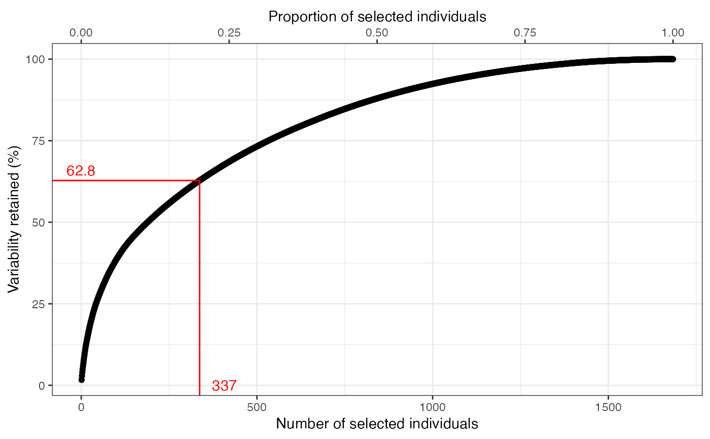
# For core set constituted by variance criterion
coreplot(x = out1, criterion = "variance")
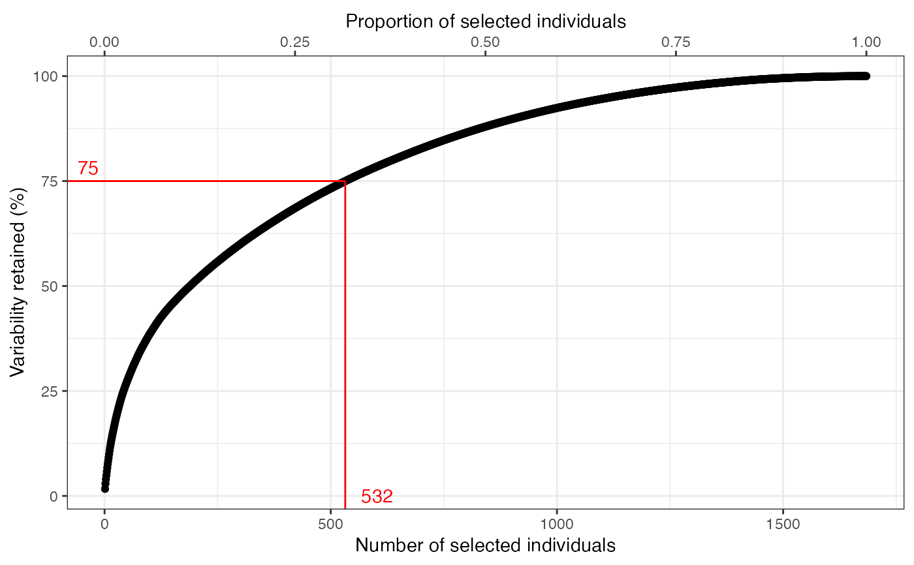
# For core set constituted by logistic regression criterion
coreplot(x = out1, criterion = "logistic")
#> $`Cumulative contribution`
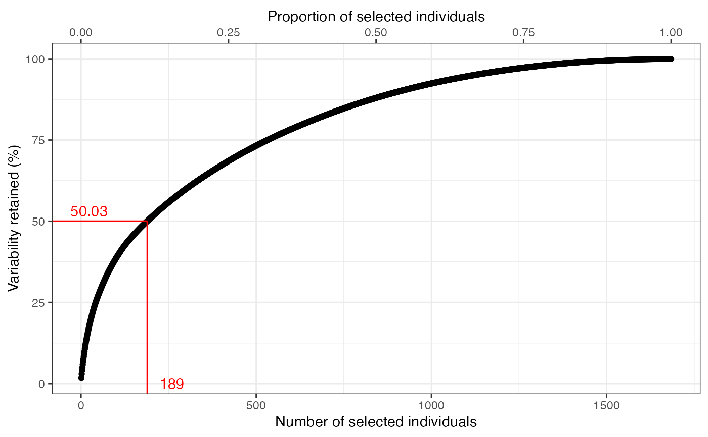
#>
#> $`Rate of cumulative contribution`
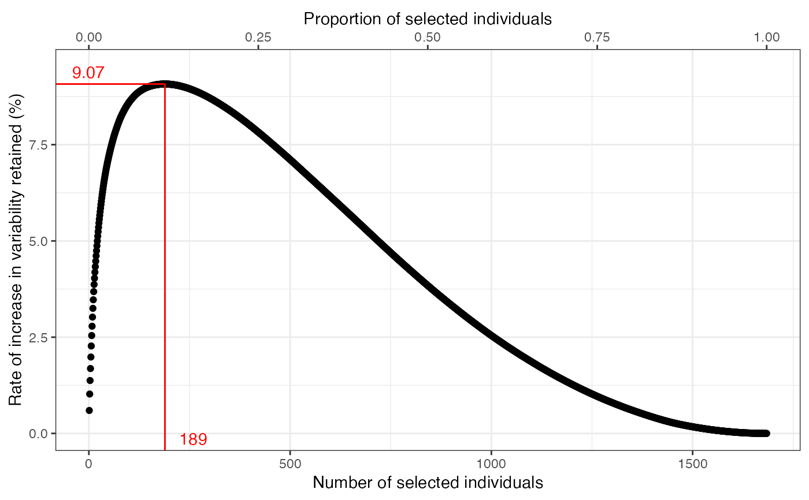
#>
#~~~~~~~~~~~~~~~~~~~~~~~~~~~~~~~~~~~~~~~~~~~~~~~~~~~~~~~~~~~~~~~~~~~~~~~~~~~~
# Get core sets with PCSS (qualitative data)
#~~~~~~~~~~~~~~~~~~~~~~~~~~~~~~~~~~~~~~~~~~~~~~~~~~~~~~~~~~~~~~~~~~~~~~~~~~~~
out2 <- pcss.core(data = data, names = "Genotypes", quantitative = NULL,
qualitative = qual, eigen.threshold = NULL,
size = 0.2, var.threshold = 0.75)
# For core set constituted by size criterion
coreplot(x = out2, criterion = "size")
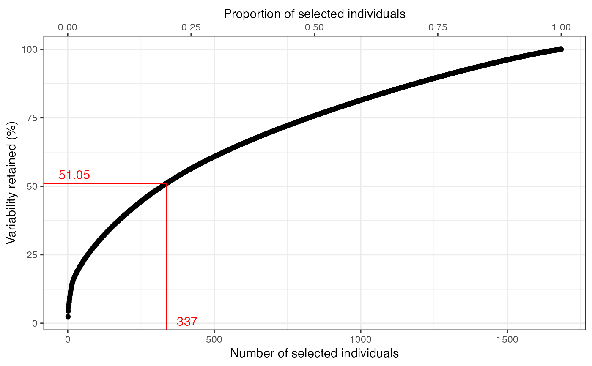
# For core set constituted by variance criterion
coreplot(x = out2, criterion = "variance")
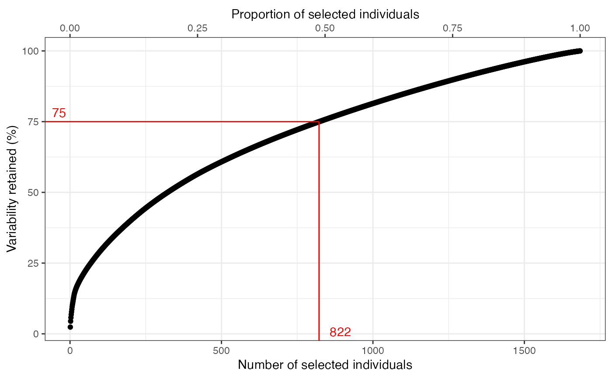
# For core set constituted by logistic regression criterion
coreplot(x = out2, criterion = "logistic")
#> $`Cumulative contribution`
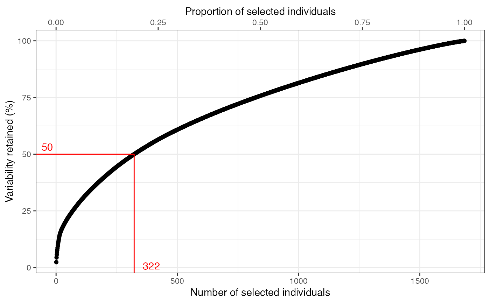
#>
#> $`Rate of cumulative contribution`
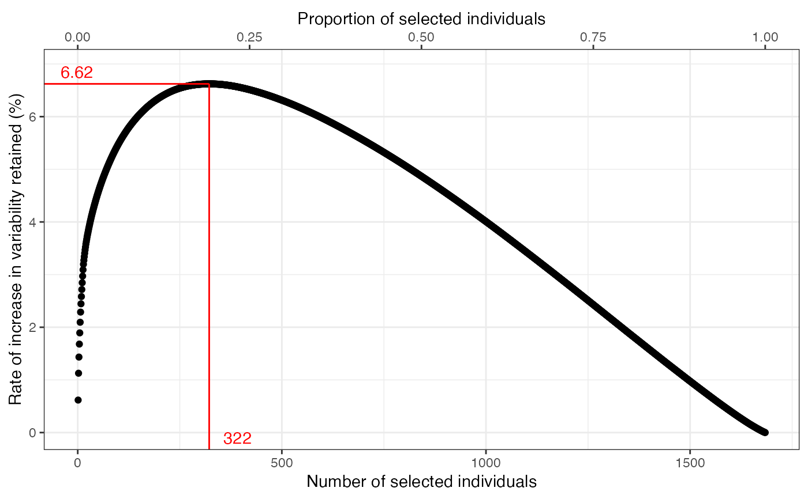
#>
#~~~~~~~~~~~~~~~~~~~~~~~~~~~~~~~~~~~~~~~~~~~~~~~~~~~~~~~~~~~~~~~~~~~~~~~~~~~~
# Get core sets with PCSS (quantitative and qualitative data)
#~~~~~~~~~~~~~~~~~~~~~~~~~~~~~~~~~~~~~~~~~~~~~~~~~~~~~~~~~~~~~~~~~~~~~~~~~~~~
out3 <- pcss.core(data = data, names = "Genotypes",
quantitative = quant,
qualitative = qual, eigen.threshold = NULL)
# For core set constituted by size criterion
coreplot(x = out3, criterion = "size")
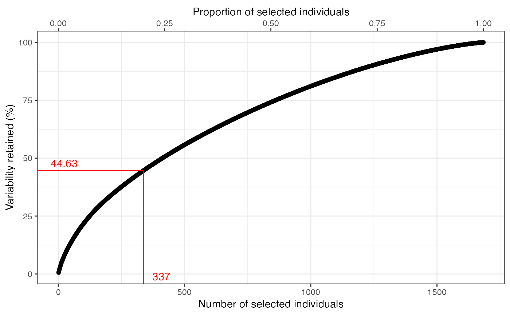
# For core set constituted by variance criterion
coreplot(x = out3, criterion = "variance")
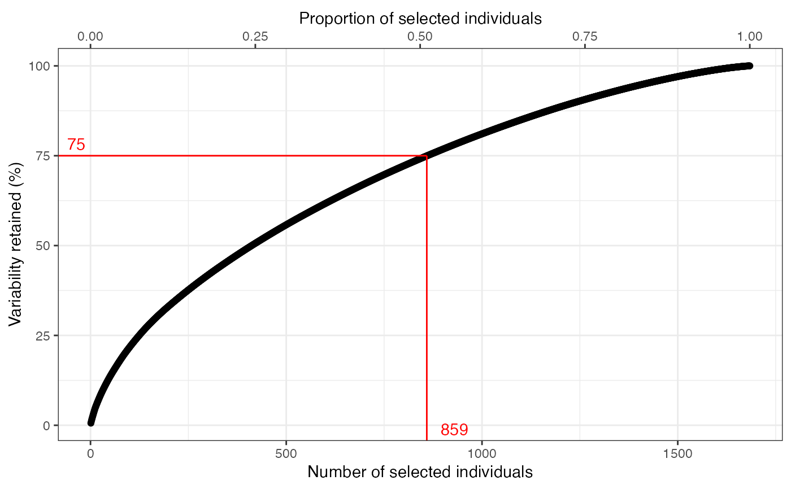
# For core set constituted by logistic regression criterion
coreplot(x = out3, criterion = "logistic")
#> $`Cumulative contribution`
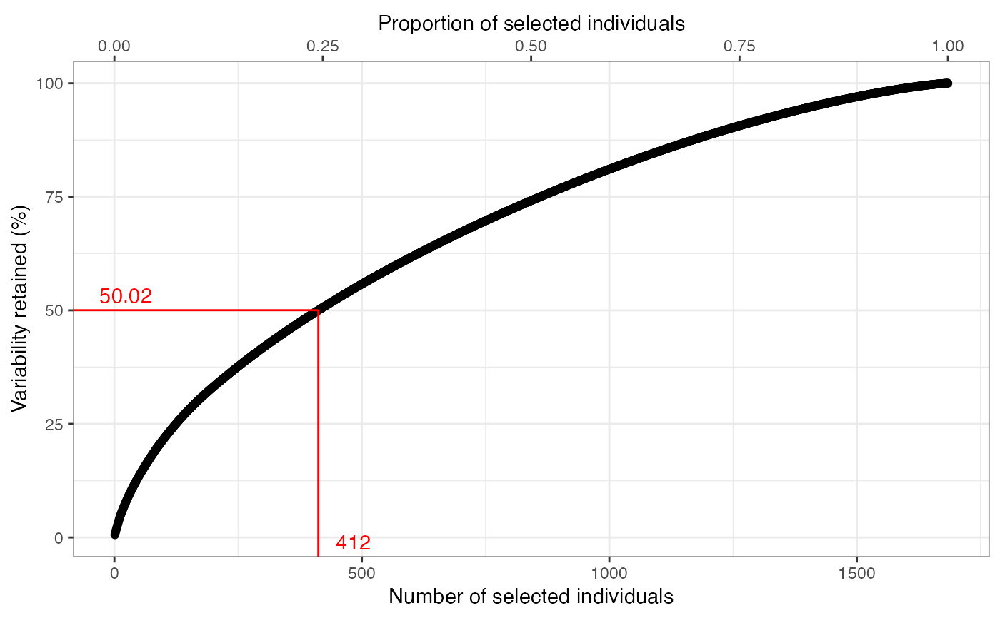
#>
#> $`Rate of cumulative contribution`
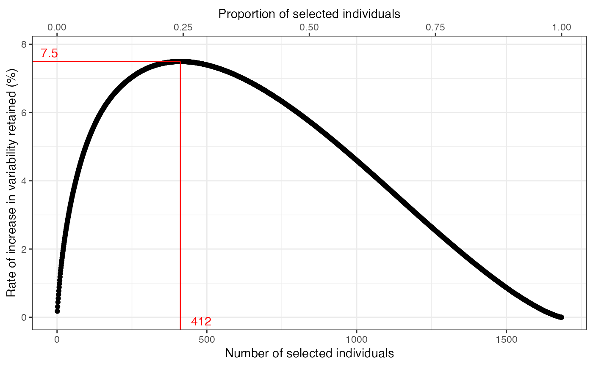
#>